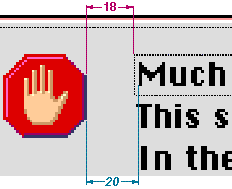

Font Guidelines
When you position or align text in dialog boxes and alert boxes, you should take into account the characteristics of the font used. Apple Computer strongly recommends the Chicago font as the metric basis for making text alignment decisions. Use of any other font as a metric basis may result in incorrect text spacing when displayed in a different font. Additionally, text smaller than 12-point Chicago sometimes cannot be localized.When a dialog box is localized for worldwide versions of system software, the text in the dialog box may become longer or shorter. The alignment of the items in the dialog box may vary with localization. For example, Arabic and Hebrew are written right to left, so the items in an Arabic or Hebrew dialog box should be aligned on the right. Be sure to create dialog items of the same size, so that they align properly when a user has a script that reads from right to left.
In general, you should use the system font for all controls. You should use the small system font only when space is limited or you need to present large amounts of textual information. Use Geneva 10 as a metric basis for small system font layout.
Use the emphasized version of the small system font for headings. The headings can either be static text labels, controls, or group box titles. Using the emphasized version sparingly increases its impact.
In aligning static text with other elements of dialog boxes or alert boxes, you should carefully choose the letter on which to base the alignment. The glyphs of a font include pixel space before each letter or number. However, while a font can include letters and numbers having the same amount of preceding space measured in pixels, it can also include characters with more or less than the standard preceding pixel space.
- Note
- 12-point Chicago gives an overall height of 16 pixels, so the height of the resource rectangle surrounding text in Chicago should be 16 pixels.
For 12-point Chicago, a standard character includes 2 preceding pixels. If you assume that the first word of a text string starts with a capital "M", which is a standard letter, you will align text correctly for all strings, not just the one you are currently placing. Figure 3-14 shows the correct alignment based on the capital "M" and the amount of space between the icon and the text.
Figure 3-14 Alignment of text based on a 12-point Chicago standard letter

12-point Chicago font includes some characters that could cause misalignment if you use them as your guide. In 12-point Chicago, the letters "J", "T", and "j" outdent 1 pixel to the left beyond the font's standard letters for left-aligned text. The letter "I" and the number "1" have an additional pixel to the left for left-aligned text resulting in a total of 3 preceding pixels for these characters.